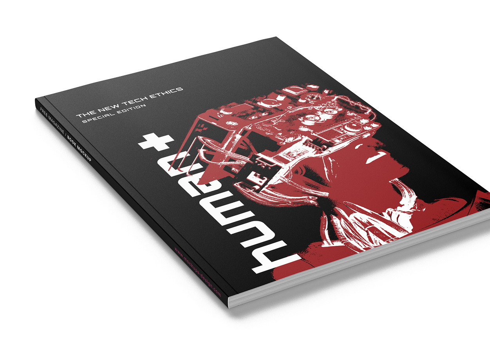
An exploratory editorial project focusing on the intersection of Artificial Intelligence and Ethics. "The New Tech Ethics Special Edition" delves into algorithmic discrimination, moral philosophy, and the societal impacts of technology through a structured, highly visual medium.
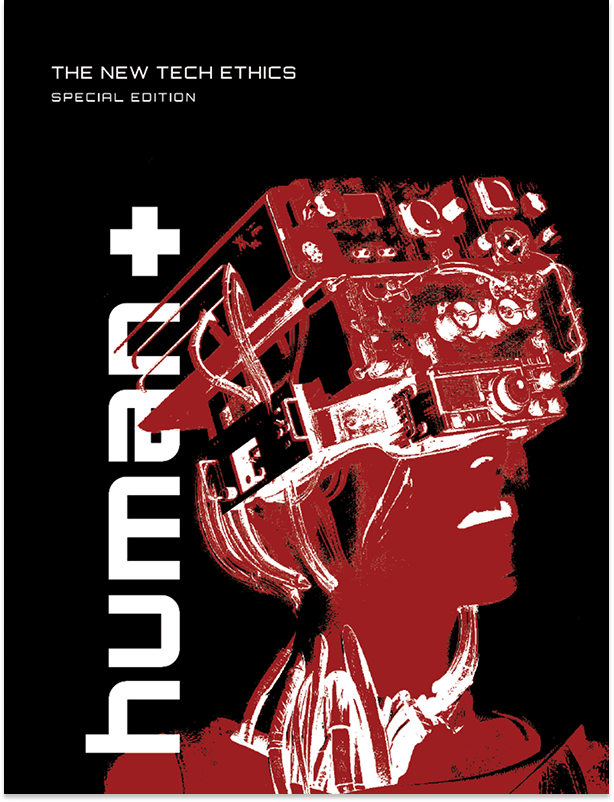
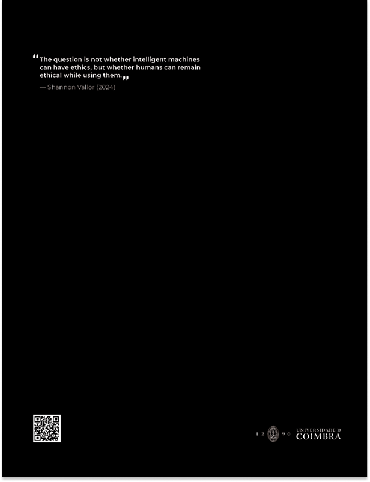
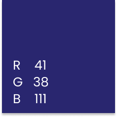
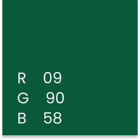
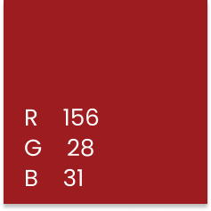
The editorial layout utilises a strict 12-column grid and a deliberate colour-coding system to guide the reader. The typography blends the futuristic 'Orbitron' with the highly legible 'Montserrat', reflecting the tension between technological advancement and humanistic values.
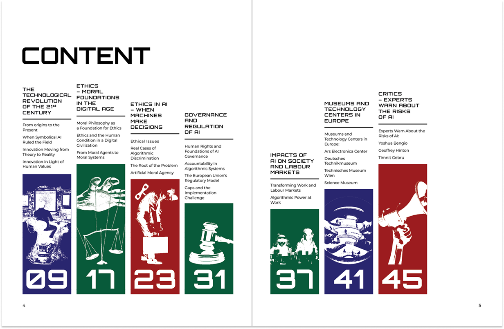
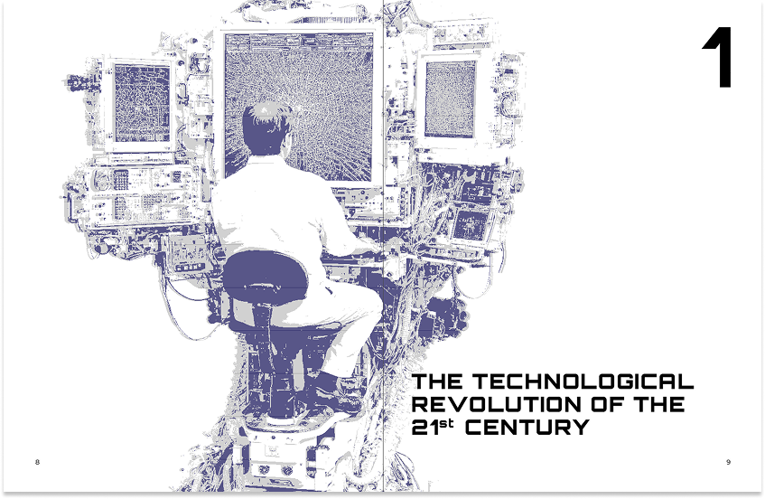
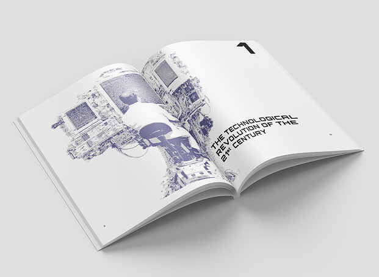
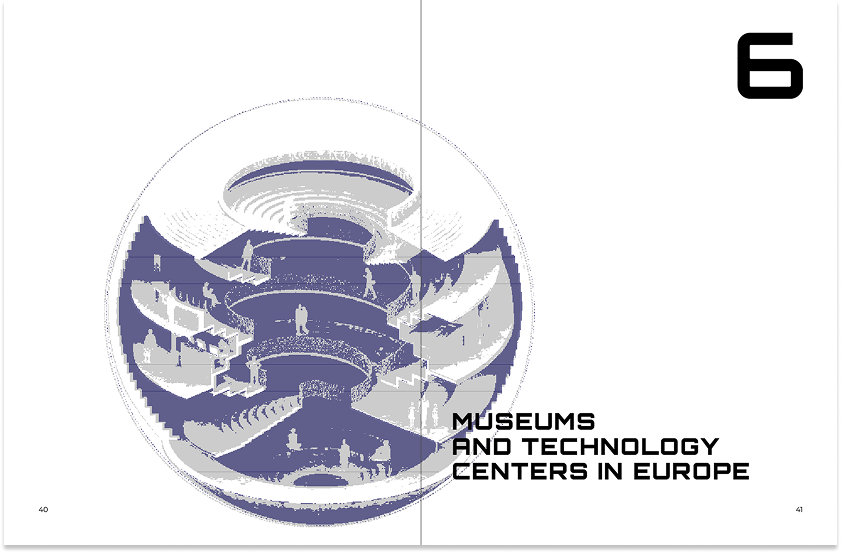
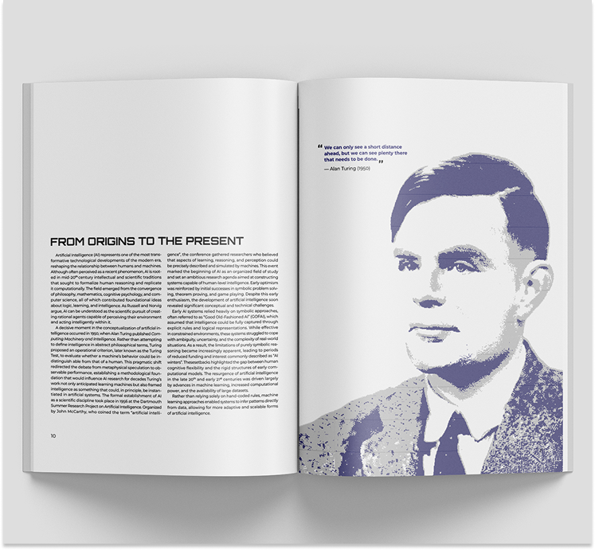
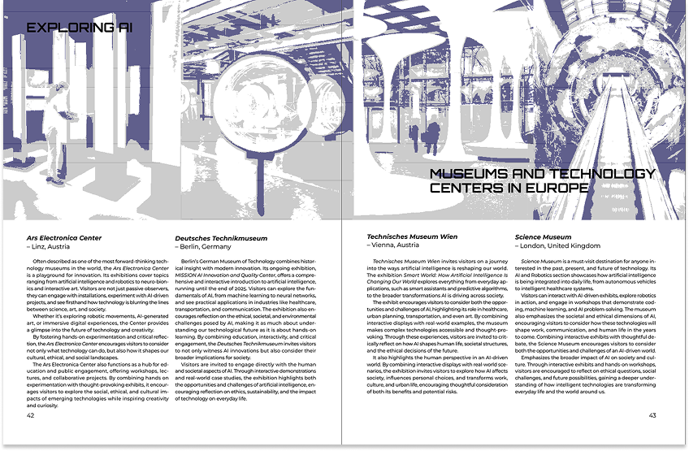
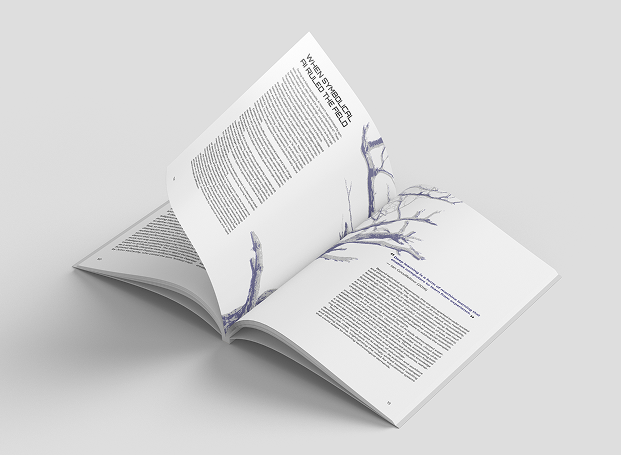
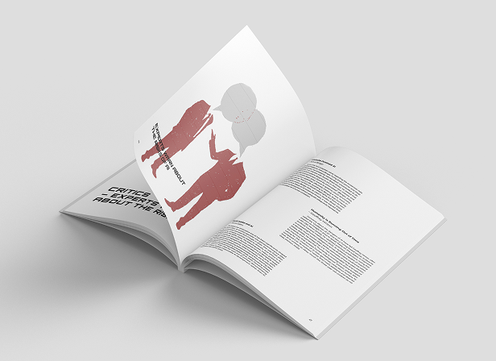
Transitioning the editorial experience from print to screen. The web interface preserves the minimalist aesthetic and structured hierarchy, optimising readability and ensuring a fluid interactive experience across all devices.
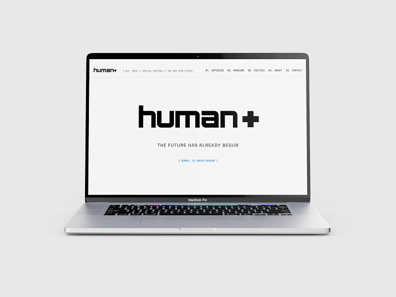
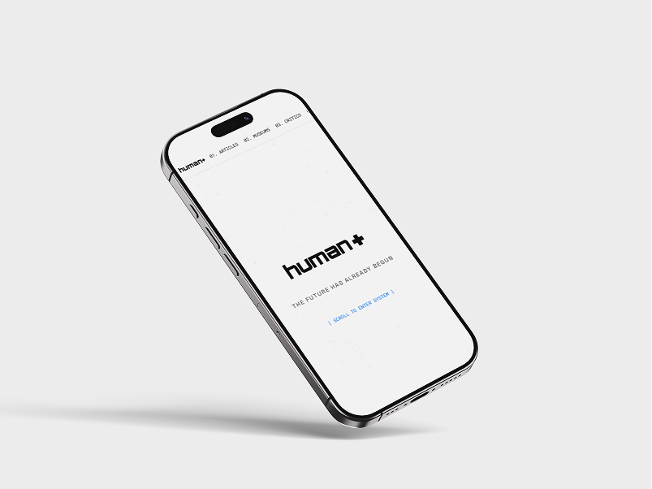
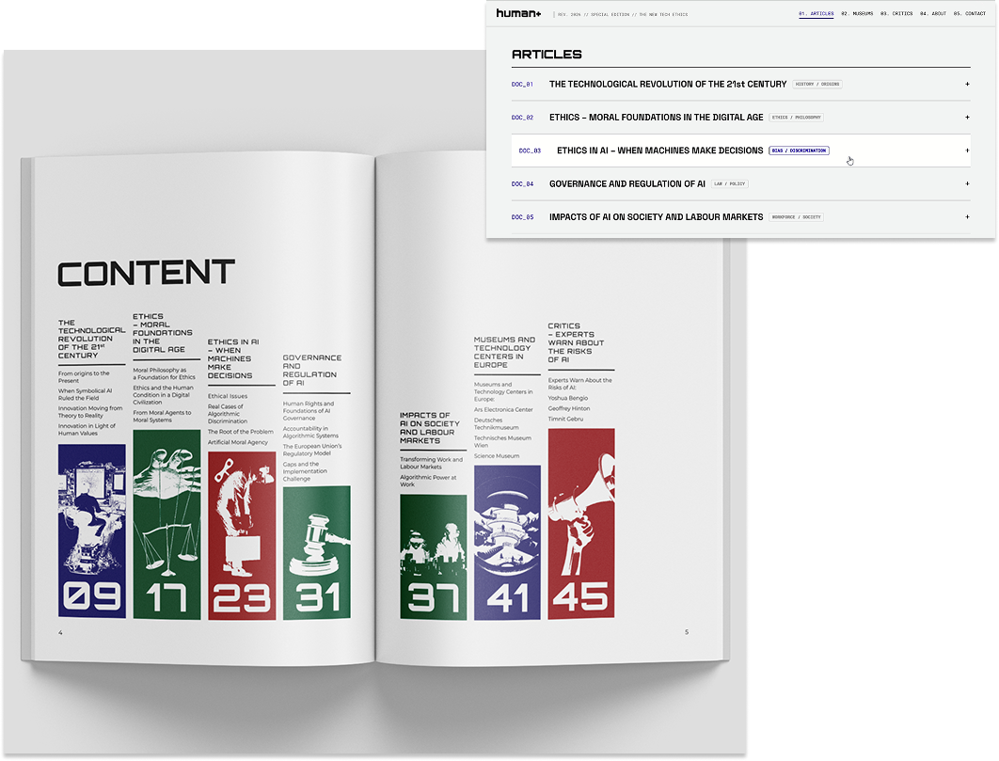
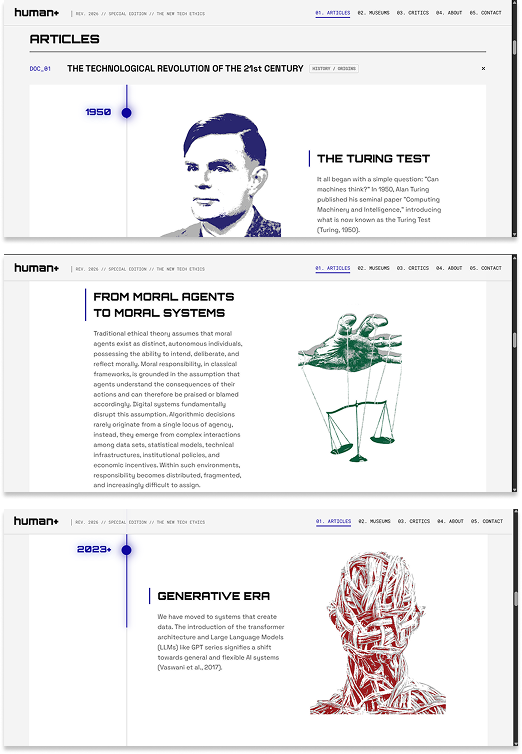
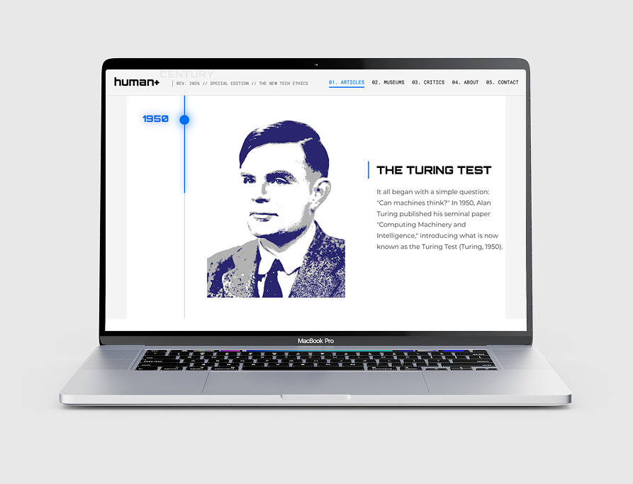